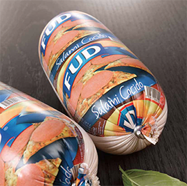

Tripa
Plástica
Nova X
La Nova X es una funda multicapa diseñada para todo tipo de productos redondos. Es una funda de alto rendimiento adecuada para mortadela, chorizo, salchicha de hígado, carne molida, productos de soya, paté y quesos. La Nova X es una funda multicapa orientada, perfecta para líneas de producción manual y automática. La contracción le da al producto una superficie lisa sin arrugas ni purga. La funda está hecha de cinco capas para dar al producto terminado la vida útil deseada y muy poca pérdida de peso durante cocción y almacenamiento. La funda tiene excelente pelabilidad, y suficiente adhesión a la carne para dar un producto sin arrugas después de la cocción y enfriamiento.
Cinco capas a medida
La funda de cinco capas, como la X, se puede adaptar para muchas aplicaciones. Es adecuada para aplicaciones de embutido en caliente, ya que tiene excelentes barreras de humedad y gas y proporciona buen control de tamaño en productos redondos. Todos los productos Nova vienen en una amplia variedad de calibres colores y posibilidades de conversión. Por lo tanto, son perfectamente adecuados para productos que usan la funda como envase y para productos que serán pelados y rebanados durante su producción. Esta funda es ideal para productos cocidos que no necesitan ser ahumados o secados.
Funda conformable
La Nova X se puede embutirse seca o empapada. Dependiendo de la aplicación del cliente, en unos casos será mejor usar una funda empapada y, en otros, una funda seca. Empapando la funda, el cliente aumenta su estiramiento y puede lograr un producto de un diámetro algo más grande.
Pérdida de peso nula
La pérdida de peso durante el ciclo de cocción con funda plástica Nova es de 0%. Es posible usar un programa de cocción similar al de la funda fibrosa, pero recomendamos una temperatura de base interna ligeramente más alta en la cocción. Esto afecta a la vida útil de la salchicha cocida o producto de carne completo de una manera beneficiosa, ya que la mayor temperatura de cocción reduce considerablemente la cantidad de bacterias de la salchicha y aumenta el valor de la pasteurización.